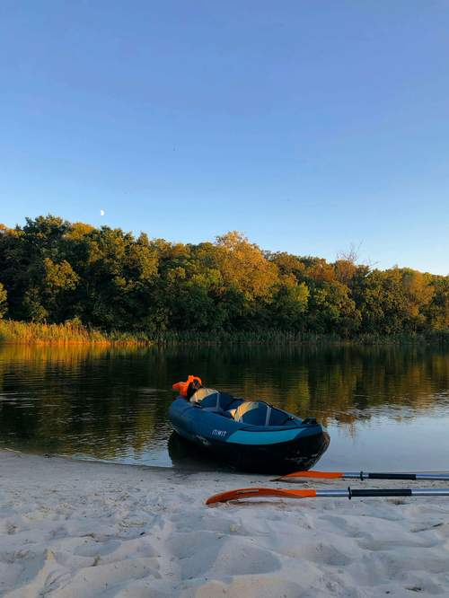
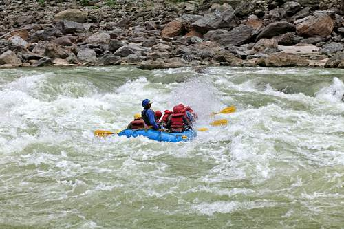
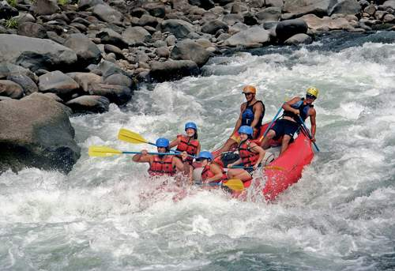
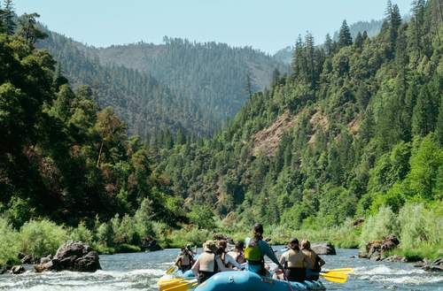
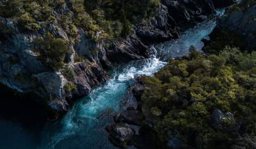
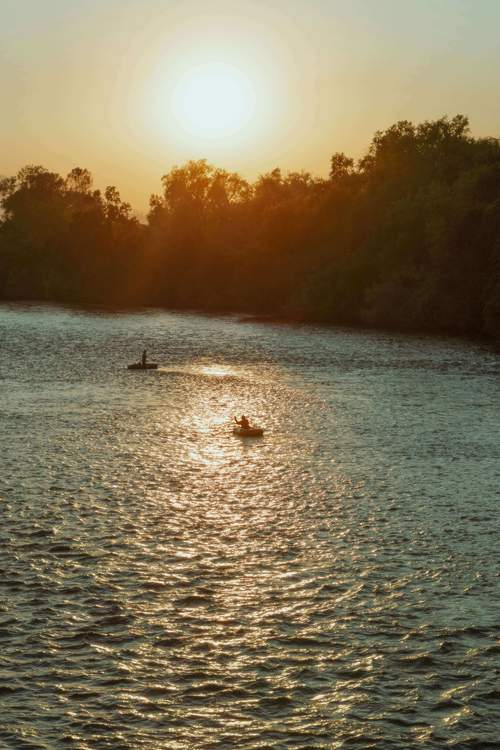

Our Mission
Our mission is to provide safe, thrilling, and unforgettable rafting adventures for everyone, from first-time paddlers to seasoned adventurers.

Our mission is to provide safe, thrilling, and unforgettable rafting adventures for everyone, from first-time paddlers to seasoned adventurers.
Founded in 2010, Wild Rapids Rafting Co. began with a small group of friends who loved the river and wanted to share that passion with others.

Since then, we have grown into a trusted name in white water adventures, guiding thousands of happy travelers down some of the most exciting rapids in the region.




